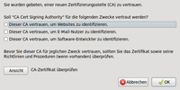
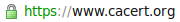

CAcert
Dieser Artikel wurde für die folgenden Ubuntu-Versionen getestet:
Ubuntu 16.04 Xenial Xerus
Ubuntu 14.04 Trusty Tahr
Artikel für fortgeschrittene Anwender
Dieser Artikel erfordert mehr Erfahrung im Umgang mit Linux und ist daher nur für fortgeschrittene Benutzer gedacht.
Zum Verständnis dieses Artikels sind folgende Seiten hilfreich:
CAcert  ist eine Zertifizierungsstelle (CA) und ein Community-Projekt. Dadurch ist es möglich, kostenlos ein Zertifikat zu erhalten und selbst am Web of Trust teilzunehmen. Ein Zertifikat wird normalerweise in zwei Bereichen verwendet: zur SSL-Verschlüsselung eines Webservers (HTTPS) und zur E-Mail-Verschlüsselung. Zertifikate werden in verschiedene Klassen eingeteilt.
ist eine Zertifizierungsstelle (CA) und ein Community-Projekt. Dadurch ist es möglich, kostenlos ein Zertifikat zu erhalten und selbst am Web of Trust teilzunehmen. Ein Zertifikat wird normalerweise in zwei Bereichen verwendet: zur SSL-Verschlüsselung eines Webservers (HTTPS) und zur E-Mail-Verschlüsselung. Zertifikate werden in verschiedene Klassen eingeteilt.
Im Folgenden wird beschrieben, wie man sich ein Zertifikat bei CAcert erstellt und dies mit verschiedenen E-Mail Programmen wie Evolution oder Thunderbird nutzt, um E-Mails mit S/MIME zu signieren und/oder zu verschlüsseln. Des Weiteren wird erklärt, wie man die sog. Root-Zertifikate von CAcert importiert, um z.B. die Signatur anderer Personen zu überprüfen.
Das beschriebene Verfahren funktioniert analog auch für Zertifikate anderer kommerzieller Herausgeber bzw. Zertifizierungsstellen. Hinweise zur SSL-Verschlüsselung eines Webservers sind in den Abschnitten Webserver und Links zu finden.
S/MIME¶
S/MIME basiert auf dem IETF-Standard X.509 und ist eine Technik zum Signieren und/oder Verschlüsseln von E-Mails. Mit GnuPG gibt es eine Alternative für sichere Verschlüsselung. Diese wird aber nicht von so vielen, insbesondere kommerziellen Mailprogrammen unterstützt wie S/MIME und erfordert die Installation zusätzlicher Software. Dafür ist GnuPG im akademischen Bereich und unter Linux sehr verbreitet.
Empfehlenswert zur Entscheidungsfindung ist auch der Artikel Welches Programm für die Verschlüsselung ist zu empfehlen?  aus dem Thunderbird Wiki.
aus dem Thunderbird Wiki.
Nachteile¶
nicht mit GnuPG kompatibel
Dateiverschlüsselung (im Vergleich mit GnuPG) nur sehr umständlich möglich
Wird ein Schlüssel verwendet, der nicht von einer kommerziellen CA stammt, ist das Sicherstellen, dass dieser Schlüssel echt ist, aufwändig und verursacht der Schlüssel erst einmal eine Fehlermeldung.
Wird ein Schlüssel verwendet, der von einer CA stammt, ist er nur vertrauenswürdig, wenn die CA dies ist.
Die Gültigkeitsprüfung für einen neuen Schlüssel kann theoretisch durch eine zweite CA ausgehebelt werden, indem diese illegalerweise ebenfalls einen gültigen Schlüssel für die selbe Adresse ausstellt und dem Empfänger diesen unterschiebt. Da dies, wenn so etwas auffliegt, viel an Presseecho verursacht, ist der häufige Einsatz dieses Mittels aber nur wenig wahrscheinlich.
Letztlich stellt sich hier die gleiche Frage wie bei Skype: für welches Verfahren man sich entscheidet, hängt vom Kommunikationspartner ab.
Zertifizierungsstellen¶
Kommerzielle Zertifizierungsstellen¶
kostenpflichtig - 100 EUR oder mehr pro Jahr für ein Client-Zertifikat sind keine Seltenheit
kommerzielle CAs sind in allen gängigen Browsern / Mailprogrammen hinterlegt, daher keine Fehlermeldung durch fehlendes Root-Zertifikat
Eigene Zertifizierungsstelle¶
umständlich
hoher Sicherheitsaufwand
Root-Zertifikat ist in gängigen Browsern / Mailprogrammen nicht integriert
CAcert¶
kostenlos
CAcert Root-Zertifikate sind in gängigen Browsern / Mailprogrammen nicht integriert
Alternativen zu CAcert¶
Es gibt nur sehr wenige Alternativen zu CAcert, um ein kostenloses S/MIME Zertifikat zur E-Mail-Verschlüsselung zu erhalten. Zum Beispiel erhalten Freemail-Nutzer bei Web.de ein 1 Jahr gültiges Class 1 Zertifikat, das nach Ablauf automatisch erneuert wird, aber erneut heruntergeladen und importiert werden muss. Weitere Möglichkeiten sind in diesem mozillaZine Artikel zu finden.
Voraussetzungen¶
CAcert Root-Zertifikate importieren¶
Egal, ob man nur mit CAcert gesicherte Internetseiten aufrufen möchte, E-Mails verschlüsseln und/oder signieren oder nur überprüfen möchte: ohne importierte CAcert Root-Zertifikate bekommt man in der Regel eine Fehlermeldung, dass die Zertifizierungsstelle dem Webbrowser / Mailprogramm unbekannt ist. Um zumindest für den Browser zu klären, ob die Root-Zertifikate von CAcert installiert sind, ruft man die folgende Internet-Adresse auf: https://cacert.org/ Erfolgt ein Hinweis auf eine ungesicherte Verbindung, fehlen diese.
Um die Root-Zertifikate in verschiedenen Programmen verwenden zu können, ist es ratsam, keine Ausnahmeregel im Browser zu definieren, sondern die Root-Zertifikate einzeln herunterzuladen und zu speichern, um sie anschließend in die verschiedenen Programme zu importieren.
Heruntergeladen werden müssen folgende Dateien  :
:
Root-Zertifikat (PEM-Format) - dies ist das sog. Class-1 Zertifikat
Intermediate Certificate (PEM-Format) - dies ist das sog. Class-3 Zertifikat
Hinweis:
Das Herunterladen der Dateien geht am einfachsten mit einem Rechtsklick ( ) auf das jeweilige Zertifikat und anschließend "Ziel speichern unter..."
) auf das jeweilige Zertifikat und anschließend "Ziel speichern unter..."
Nach dem Import (siehe unten) kann man zum Testen erneut die Adresse https://cacert.org/ aufrufen.
Mozilla Firefox¶
 In Firefox reicht es, die oben verlinkten Dateien zu öffnen. Firefox fragt dann, ob das Zertifikat importiert werden soll. Mit Klick auf "OK" bestätigen.
Falls dieser Weg nicht möglich ist, importiert man die beiden Zertifikate über "Bearbeiten -> Einstellungen -> Erweitert -> Zertifikate -> Zertifikate anzeigen -> Zertifizierungsstellen -> Importieren...".
Die importierten Zertifikate sind sofort aktiv, d.h. man braucht Firefox nicht neu starten.
Chromium¶
Um die Zertifikate in Chromium zu importieren, muss das Paket libnss3-tools installiert sein:
libnss3-tools
 mit apturl
mit apturl
Paketliste zum Kopieren:
sudo apt-get install libnss3-tools
sudo aptitude install libnss3-tools
Danach wird das Root-Zertifikat sowie das Intermediate-Zertifikat importiert:
certutil -d sql:$HOME/.pki/nssdb -A -t "C,," -n ca-cert -i Downloads/root.crt certutil -d sql:$HOME/.pki/nssdb -A -t ",," -n ca-cert-class3 -i Downloads/class3.crt
 Chromium muss im Gegensatz zu Firefox neu gestartet werden, um die neuen Zertifikate zu verwenden.
Evolution¶
Um die Root-Zertifikate in Evolution zu importieren, muss man folgende Schritte durchführen: "Bearbeiten -> Einstellungen -> Zertifikate -> Zertifizierungsstellen -> Importieren" und nun noch die gewünschte Zertifikatsdatei auswählen.
Thunderbird¶
Das Vorgehen ist im Artikel E-Mail-Verschlüsselung mit S/MIME aus dem Thunderbird Wiki ausführlich beschrieben.
Git¶
Wenn mit git von einem Server geklont werden soll, welcher ein CACert Zertifikat besitzt, kann es zu den Fehler "server certificate verification failed" kommen. Hier ist es notwendig die Root Zertifikate mit den folgenden Befehlen dem System hinzuzufügen CACert#Debian.
wget http://www.cacert.org/certs/root.crt http://www.cacert.org/certs/class3.crt sudo cp root.crt /usr/local/share/ca-certificates/cacert-root.crt sudo cp class3.crt /usr/local/share/ca-certificates/cacert-class3.crt sudo update-ca-certificates
CAcert Mitglied werden¶
Über die Internetadresse Join CAcert kann man sich jederzeit zur Teilnahme anmelden. Folgende Angaben werden verlangt:
Vorname
Nachname
Geburtsdatum
E-Mail Adresse
sicheres selbstgewähltes Passwort
5 Fragen und Antworten, falls das selbstgewählte Passwort verloren gehen sollte
Akzeptieren des CAcert Community Agreement
Nach Abschicken dieser Angaben erhält man eine E-Mail an die angegebene E-Mail Adresse. Enthalten ist ein Link auf eine Webseite, auf der man nun den Antrag bestätigt. Dies muss innerhalb von 24 Stunden geschehen!
Client Zertifikat beantragen¶
Anschließend und in Zukunft kann man sich über die Internetadresse CAcert Login mit seiner E-Mail Adresse und dem selbstgewählten Passwort anmelden. Über den Menüpunkt "Client Certificates - New" kann man sich selbst ein Class 1 Zertifikat mit einer Gültigkeit von einem halben Jahr ausstellen, das zumindest bei der Nutzung von Firefox direkt importiert wird.
Client-Zertifikat aus Firefox exportieren¶
Um ein vorhandenes Client-Zertifikat aus Mozilla Firefox zu exportieren, so dass es andere Programme nutzen können, sind folgende Schritte nötig: "Bearbeiten -> Einstellungen -> Erweitert -> Sicherheit -> Zertifikate anzeigen -> Ihre Zertifikate". Hier dann unter dem Eintrag "Root CA" das eigene Zertifikat auswählen und mit "Sichern" exportieren. Es wird ein Passwort abgefragt, welches den privaten Schlüssel des Zertifikates schützt. Wichtig: Die exportierte .p12 Datei dient auch als Sicherungskopie (Backup) und sollte an einem sicheren Ort aufbewahrt werden!
Hinweis:
Das Passwort, das man hier eingegeben hat, wird auf der einen Seite zum Importieren des Zertifikates benötigt, auf der anderen Seite jedesmal dann, wenn man eine S/MIME verschlüsselte oder signierte Mail versenden möchte! Es ist daher ratsam, ein sicheres Passwort zu wählen und sich dieses auch zu merken.
Experten-Info:
Wenn man das Passwort mal vergessen haben sollte oder aber die Browserkonfiguration abhanden gekommen oder gelöscht worden ist, kann man das Zertifikat einfach erneut importieren und mit Firefox nochmals exportieren. Hierbei wird ein neues Passwort vergeben und auch die mit dem alten Passwort verschlüsselten Mails können wieder gelesen werden!
S/MIME mit E-Mail nutzen¶
Prinzipiell sind zwei Schritte erforderlich:
Import der Root-Zertifikate des Ausstellers (wenn noch nicht vorhanden; siehe oben)
Import des eigenes Zertifikats
Um (später) an den öffentlichen Schlüssel des Empfängers zu gelangen, lässt man sich am einfachsten eine signierte (aber nicht verschlüsselte!) E-Mail des/der Kontaktpartners/in schicken. Auf dem gleichen Weg lässt sich auch der eigene öffentliche Schlüssel übermitteln. Diese Funktionalität hängt aber auch von den S/MIME Fähigkeiten des verwendeten E-Mail Programms ab.
Darüber hinaus ist es beim Einsatz einer Public Key Infrastruktur (PKI) sinnvoll, E-Mails nicht nur für den Empfänger zu verschlüsseln, sondern auch immer an sich selbst. Ansonsten kann nur noch der Empfänger die Nachricht lesen, aber nicht der Absender.
Evolution¶
Das eigene Zertifikat muss für Evolution im PKCS#12-Format (.p12) vorliegen und wird unter "Bearbeiten -> Einstellungen -> Zertifikate -> Ihre Zertifikate" importiert.
Nun kann ein Test mit einer signierten und verschlüsselten E-Mail an die eigene (zertifizierte) E-Mail Adresse erfolgen. Wichtig: dazu sollte die Option Bearbeiten -> Einstellungen -> E-Mail-Konten -> <Kontoname> -> Bearbeiten -> Sicherheit -> "beim Verschicken verschlüsselter E-Mails auch zu sich selbst verschlüsseln" aktiviert und jeweils das richtige Signatur- und Verschlüsselungszertifikat ausgewählt sein. Klappt das soweit, steht dem Einsatz von S/MIME mit Evolution nichts mehr im Wege. Beim Schreiben einer neuen E-Mail stehen nun über das Menü "Sicherkeit" die beiden Punkte "mit S/MIME signieren" und "mit S/MIME verschlüsseln" wahlweise zur Verfügung.
Thunderbird¶
Das Vorgehen ist im Artikel Mailverschlüsselung mit S/MIME aus dem Thunderbird Wiki ausführlich beschrieben.
Webserver¶
Zuerst muss eine Zertifikats-Anfrage mit openSSL erstellt werden. Eine einfache Erstellung einer Anfrage erfolgt mit dem Befehl:
openssl req -new -newkey rsa:2048 -nodes -out DOMAIN.csr -keyout DOMAIN.key -subj "/C=STAAT/ST=BUNDESLAND/L=STADT/O=FIRMA/OU=BEREICH/CN=DOMAENE"
Die Parameter im Einzelnen:
"2048" ist die Schlüsselstärke, momentan Standard (Stand: Febr. 2012) und sollte aus Sicherheitsgründen nicht kleiner als 2048 Bit sein. Wird eine stärkere Verschlüsselung gewünscht, kann der Wert mal 2 genommen werden, also 4096 Bit. Je größer die Schlüsselstärke, um so mehr kommt das System ins "Schwitzen".
DOMAIN.csr und DOMAIN.key: das Wort "DOMAIN" wird durch den zu signierenden Domain-Namen ersetzt. .csr steht für die Schlüsselanforderung, .key ist der private Schlüssel, der niemals anderen zugänglich gemacht werden darf.
"C=STAAT" - steht für das Land (Country), wobei die Länder abgekürzt werden:
desteht für Deutschland,chfür Schweiz,atfür Österreich usw.
"ST=BUNDESLAND" - ST steht für State. Das Word "BUNDESLAND" wird zum Beispiel mit Berlin ersetzt. Bayern bekommt die englische Bezeichnung Bavaria.
"L=STADT" - L steht für Location. Das Wort "STADT" wird zum Beispiel mit Berlin ersetzt. Wer in Köln wohnt, trägt die englische Bezeichnung Cologne ein, Paderborn bleibt so.
"O=FIRMA" - O steht für Organization. Das Wort "FIRMA" wird beispielsweise durch die eigene Firma ersetzt.
"OU=BEREICH" - OU (Organization Unit) steht praktisch für die Abteilung (Department). Das Word "BEREICH" kann unter anderem mit "Web Administration", "Autohaus" oder ähnlichem ersetzt werden.
"CN=DOMAENE" - CN steht für Common Name. Hier wird in der Regel die jeweilige Domain, für die das Zertifikat ausgestellt wird, angegeben. Es sollte entweder
beispieldomain.debzw.www.beispieldomain.deeingetragen werden. Für eine Wildcart-Domain wird ein Stern, gefolgt von einem Punkt eingetragen:*.beispieldomain.de, wobei diese Sache etwas kritisch anzusehen ist.
Um die Zertifikats-Anforderung zu erleichtern, gibt es auch einen entsprechenden Generator .
Bei CAcert wird im Menü "Domains" unter "hinzufügen" die eigene Domäne ohne Sub-Domänen eingetragen (beispieldomain.de). Anschließend wird eine Liste mit E-Mail-Adressen angezeigt, wo die passende und aktive Mailadresse ausgewählt wird, da eine einfache Überprüfung stattfindet.
In der Antwort via E-Mail befindet sich ein Bestätigungslink, mit dem der Vorgang abgeschlossen wird. Auf der Seite von CAcert muss nur noch bestätigt werden, dass einem die Domäne auch tatsächlich gehört. Nach diesem Vorgang kann die erstellte CSR-Anfrage in das Feld eingetragen und das Serverzertifikat für den Webserver erstellt werden.
Links¶
user-maintained 'Unofficial' FAQ
- CAcert Wikideutschsprachige CAcert Community
- CAcert Wiki
CAcert - Wikipedia
Anleitung für KMAil im Forum
Debian verzichtet auf SSL-Root-Zertifikate von CAcert
- heise Open Source, 03/2014
Grundlagen¶
E-Mail Verschlüsselung mit S/MIME:
Privacy-Handbuch
- auch im PDF-FormatTiny CA
- eigene kleine Zertifizierungsstelle (CA) betreibenFrequently Asked Questions for the EOL of WOT / Class One
- FAQ zu auslaufenden Zertifikaten von Thawte
- Erstellt mit Inyoka
-
 2004 – 2017 ubuntuusers.de • Einige Rechte vorbehalten
2004 – 2017 ubuntuusers.de • Einige Rechte vorbehalten
Lizenz • Kontakt • Datenschutz • Impressum • Serverstatus -
Serverhousing gespendet von